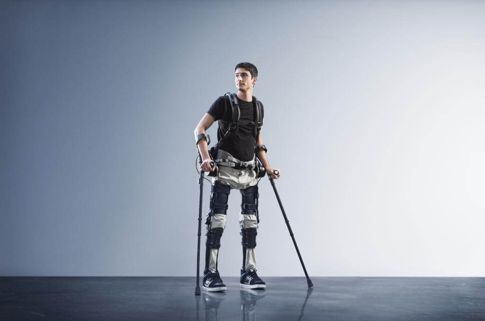

Disruptive Technology and the Government
Home
About
Communication/Media
Education
Health/Medicine
Reference
Disruptive Technology Tranforming the relatonship between the Government and Citizens
Public Safety: Wearable Tech Ii Transforming Emergency Response
The wearable technology market is expected to grow from $20 billion in 2015 to almost $70 billion in 2025, according to research firm IDTechEx. As commercial applications bloom, more will find their way into the public sector and emergency response(Raths, 2015).
This year has seen an increase in the number of police departments using body cameras. And already under development are wireless devices that monitor a responder’s breathing, heart rate and blood pressure, as well as potentially harmful environmental conditions, and relay concerns back to incident command(Raths, 2015).
Transportation and Mass Transit: Big Breakthroughs are just around the Corner
Nothing is likely to be more disruptive to transportation, mass transit and urban planning than the double whammy of connected vehicle technology and autonomous vehicles(Raths, 2015).
The U.S. Department of Transportation expects great things from the connected vehicles of the future — and that future may be just around the corner. Vehicle-to-infrastructure communication capabilities and anonymous information from passengers’ wireless devices relayed through dedicated short-range connections could provide transportation agencies with improved traffic, transit and parking data, making it easier to manage transportation systems and improve traffic safety(Raths, 2015).
Parks and Recreation: Tracking Trees For A Better Future
A combination of advances in mobile data collection systems and geocoding lets natural resources and parks agencies be more proactive about collecting tree data, managing urban forests and quantifying their value, as forests become increasingly important resources in an era of climate change(Raths, 2015).
Philadelphia Parks and Recreation has added approximately 2 million trees to its database in the past few years. It plans to create a digital management system for all of them. Los Angeles City Parks uses the Davey Tree Expert Co.’s Web-based TreeKeeper management software to manage existing tree inventories and administer work orders. The department can also more easily look at species balance to manage against pests, disease and drought(Raths, 2015).
© Johnor Livingston, September 2016